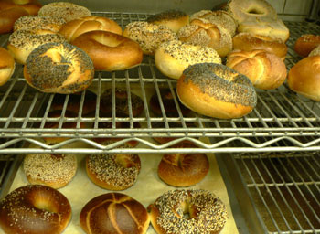
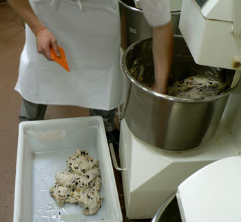
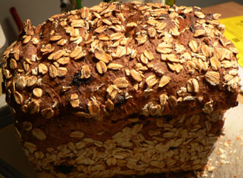

Bread class, continued
In my second day of bread class, we made hundreds of baguettes in four varieties: straight dough, poolish, pâte fermentée, and liquid levain. It is a tiny class, so we all had a ton of scaling, pre-shaping, shaping, and baking practice. The teacher says that baguettes are the hardest bread to make, and that a good baguette is the hallmark of a good baker. I think I’m starting to get the hang of it, but only when I have a master baker standing next to me and telling me what to do.
Once the baguettes were all baked, we had a tasting. The straight dough and poolish tasted almost the same to me, as did the fermented dough and liquid levain. I much prefer the latter group, as they have a more pronounced aroma and flavor. Bakers like to sit around and discuss baguettes the way wine people discuss wine.
We also baked the bagels that we started last week:

Making bagels is fun and easy. They fermented all week in the freezer, so all we had to do was drop them for a few seconds in boiling water, seed them, and bake them. Mom and I shared a sesame this morning, and she declared it delicious.
In between the baguette and bagel excitement, we made an excellent blueberry walnut loaf bread. Here is a picture of one of my classmates cutting the chunky dough out of the mixer:

This is the currently my least favorite part of the baking process. It hurts my back, and it takes kind of a long time. Certain doughs are much harder to extract than others, but all of them are a pain. Luckily, it’s pretty easy to avoid doing this unpleasant task. “Here, so and so, why don’t you get some more practice with this while I flour the bench?”
The bread was full of honey, toasted walnuts (which our teacher left mostly whole), and dried blueberries (fresh are too full of water), and it was covered in oats. Mom had a slice with cream cheese when it was still warm from the oven, and she said it was the perfect snack.

Shaping this bread was fun. You kind of flatten it into a rectangle then fold the sides in and roll it up. The teacher says some people don’t like to see the roll marks on the ends, but that they indicate a hand-rolled loaf.
There will be more posting later today; mom and I are about to set out on a food tour of downtown Manhattan!
Comments
I enjoy reading about your bread classes! It’s interesting that your pâte fermentée and liquid levain tasted the same.
I haven’t eaten much in downtown Manhattan, but in midtown, I love La Grenouille. :)
love your website…where are you taking your bread classes?
i want to learn how to bake bagels can you please let me know what the class schedule is ?
thanks
Add a comment